Rotinas SISEG
1. Acesso ao Sistema SISEG
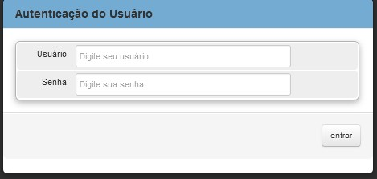
▲ Início2. Consultar Formulários de Violência Doméstica
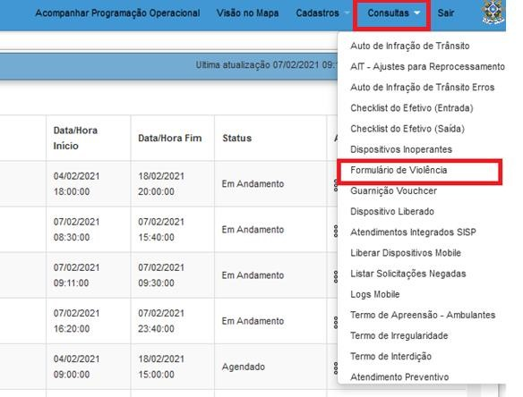
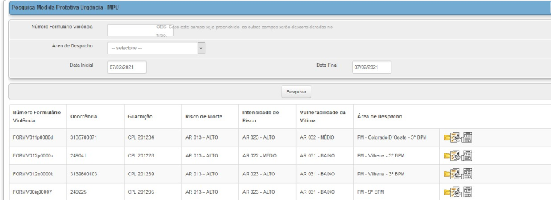
▲ Início3. Ícones de Pesquisa
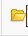
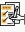
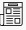
4. Lançamento na Planilha SISEG
Manter o sistema aberto durante o serviço e atualizar constantemente para localizar ocorrências conforme são registradas pelas guarnições dos Batalhões da Capital: 1º BPM, 5º BPM e 9º BPM e suas respectivas áreas de atuação.
-
Planilha SISEG – Registro de Ocorrências
Lançar na Planilha Registro de Ocorrências – SISEG do Drive.
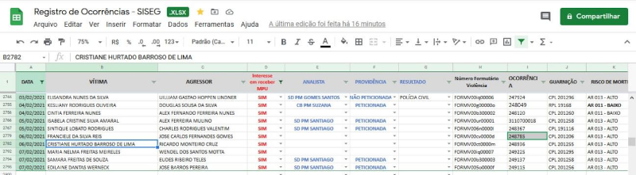
-
Selecionar e copiar
Selecionar a linha correspondente no Sistema SISEG e copiar.
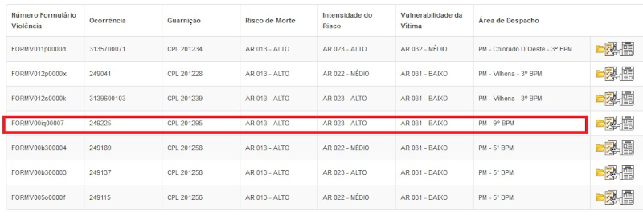
-
Colar na Planilha
Colar na Planilha Registro de Ocorrências – SISEG a partir da linha destacada abaixo.
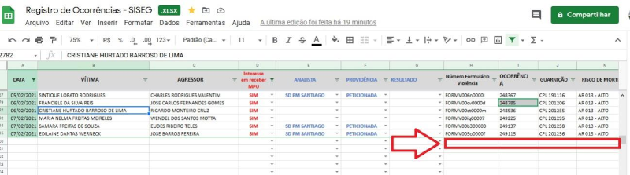
-
Abrir Relatório Formulário Violência
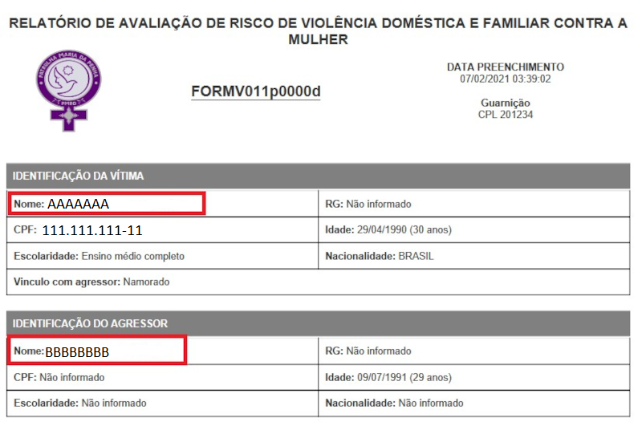
-
Selecionar o nome da Vítima e do Agressor e colar na Planilha
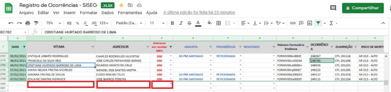
-
Selecionar a opção de interesse em MPU – SIM / NÃO
Preencher conforme resposta no Formulário de Violência.
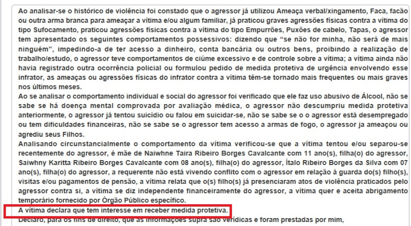
-
Selecionar a opção de flagrante para o Agressor
Conduzido · Não Presente · Não Conduzido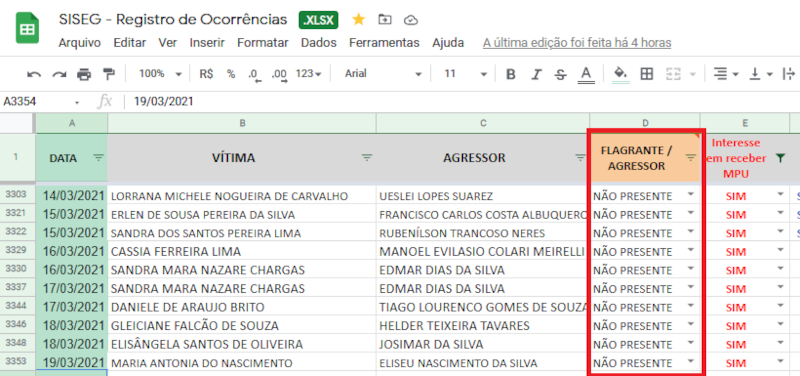
-
Acrescentar as informações ANALISTA – PROVIDÊNCIA
Após o peticionamento junto ao PJE, preencher o RESULTADO DA PROVIDÊNCIA usando uma das opções conforme destaque abaixo:
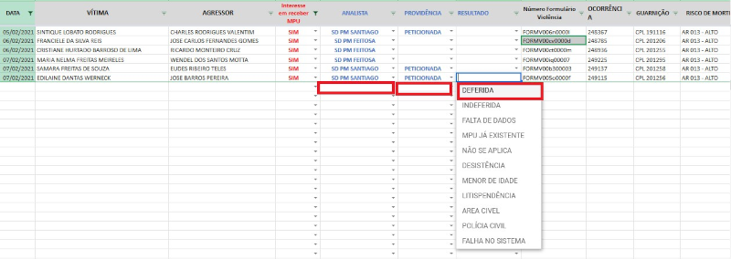
-
Opção FALTA DE DADOS
Quando selecionada a opção FALTA DE DADOS, detalhar no campo de observação ao final da linha.
Quando selecionado DEFERIDA, informar o número do processo judicial.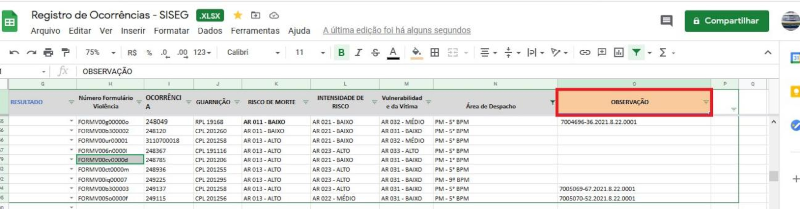